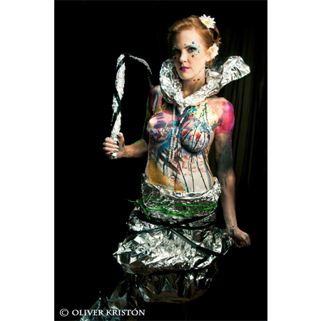

{kind=link}
{kind=link}
{kind=link}
-

Highlights include interviewing Minnesota Senator Amy Klobuchar, Jacob Frey, and Bill Moyers.
Norell and Zander are seen interviewing Amy Klobuchar at a fundraising event by Young Progressive Majority of Minnesota [YPM] in the summer of 2011 to gather goods and supplies for tornado relief to affected North Minneapolis families and homes.XTV
-

Highlights include participating in NY Fashion Week with artist Brad Baker, having our photography exhibited with celebrity designer Emre Erturk and fine artist Gulay Alpay at FIMA in Montreal in 2011, and the X Fashion Show starring Emmy Winner Karen Alloy.
X Fashion also featured several models, Mach Fox, the Nightstalker, Norell, and Jewelry by Nadia Ram.X Fashion
-

Highlights include SummerSet Music and Camping Festival Aug. 24th-26th, 2012; working with Black Kat Shows at Sexapalooza in Minneapolis Nov. 2nd - 4th, 2012, and again at Sexapalooza in Portland on November 16th-18th, 2012.
Highlights also included painting at the Benny Benassi concert at Epic on May 24th, 2013; body painting all weekend long at the Gay 90s during Twin Cities Pride Festival and thereafter being granted the priviledge of Artist Residency.vw|NK Agency
-

"All Over the Walls", a Blue Bridge Media Group Documentary, captures the talents and efforts that worked to bring the vision of Karnak to reality, and the many obstacles that served to stand in the way
It premiered at the Minneapolis St. Paul International Film Festival 2011, won "Best Featured Documentary" at that year's Highway 61 Film Festival, and featured at MCAD as well.Karnak